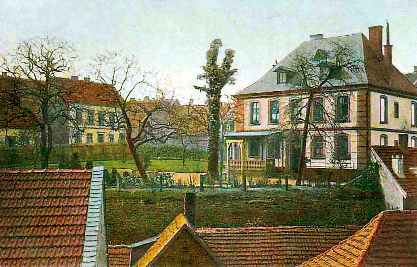
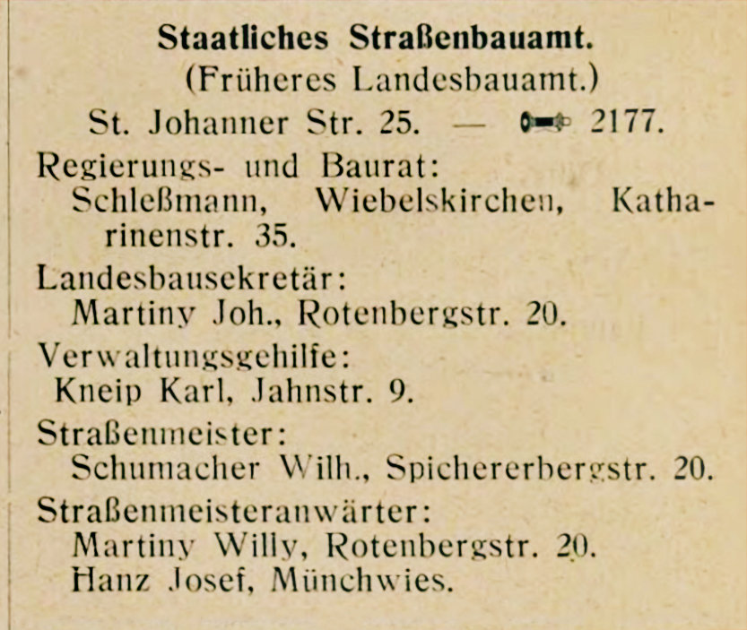

der Stadt Neunkirchen
Rauchwolken über der Grube König
Die Familie Schleßmann Teil 5
Die Schleßmanns machen sich aus dem Staub
Im zwanzigsten Jahrhundert waren die Tage der Familie Schleßmann in Neunkirchen gezählt. Die Familienmitglieder verliessen nach und nach zuerst Neunkirchen und die meisten von ihnen auch das Saarland.Schon vor der Jahrhundertwende war es mit der Idylle in Neunkirchen endgültig vorbei. Der Ort war im Griff der fortschreitenden Industrialisierung.
Nicht echte, himmlische, sondern künstliche: Industriewolken. Wenn der Himmel klar und blau ist, so sieht man ihn von hier wie durch gelbes Flaschenglas
- Joseph Roth über Neunkirchen, 1927
Dem schädlichen und übelriechenden Hüttenrauch des Eisenwerks konnte niemand entgehen und der Kohlenstaub des Bergwerks füllte die Luft und lagerte sich auf den Häusern und Straßen ab. Die saarländische Autorin Liesbet Dill in ihrem realistischen Roman "Virago" beschrieb den Ort als "schwarz": "Alles sei schwarz, die Luft, die Häuser, die Dächer und das Wasser, das durch den Ort flösse, alles sei schwarz. Man müsse sich am Tag zehnmal die Hände waschen, und wenn man morgends die Fenster aufmache, regne es Ruß".
Trotzdem blieben die ländlichen Strukturen erhalten; viele Menschen hatten nach wie vor Felder und Gärten und hielten sich Hühner, ihre geliebten Ziegen und gelegentlich auch Pferde oder Schweine. Die schönen Wälder, die Neunkirchen umgaben, liessen sich mit einem kurzen Fußmarsch erreichen und gaben die Möglichkeit der Erholung in der Natur.
Der Zustrom von Arbeitern nach Neunkirchen hielt weiterhin an. Bergleute, Hüttenarbeiter und Bergwerksbeamte bildeten die Mehrzahl der Bevölkerung. Die Einwohner Neunkirchens arrangierten sich mit der Situation: Die Anzahl der Geschäfte erhöhte sich, Schulen wurden eingerichtet, es gab ein Krankenhaus, eine Festhalle und sehr viele Vereine.
Turn- und Festhalle
Ansichtskarte Neunkirchen

Alte Ansichtskarte aus dem selben Blickwinkel
Christian Schleßmann und Wilhelmine Werner
Christian Schleßmann, der zweitälteste Sohn von Karl Schleßmann und Elisabetha Dorst, wurde am 23. Juli 1844 in Neunkirchen geboren. Er war Schmiedemeister. Im Alter von 30 Jahren, also recht spät, heiratete er am 2. April 1874 die 19-jährige Wilhelmine Werner (1855–1926), die Tochter des Gastwirts und Schuhmachermeisters Valentin Werner (1824–1905) und seiner Frau Maria Scheidhauer (1830–1894).Arbeit unter Tage
Christian und Wilhelmine hatten in einem Zeitraum von 20 Jahren neun Kinder, drei Mädchen und sechs Jungen. Der älteste Sohn Christian war 19 Jahre älter als das jüngste Kind Martha. Ein Junge starb einen Tag nach der Geburt und die kleine Wilhemine, genannt Minchen, starb im Alter von fünf Jahren an den Folgen eines Unfalls. Dieses Unglück traf die Familie schwer. Die Mutter hob die Kleider der Kleinen bis an ihr Lebensende auf.
Christian Schleßmann lebte mit seiner Familie in der Marktstraße 22, mitten im Ort. Neben dem Wohnhaus gab es eine Schmiede und einen Stall, von denen der älteste Sohn Christian in seiner Familienchronik berichtet. Vier Söhne heirateten, aber die Töchter blieben ledig.
Die Marktstraße auf dem Stadtplan
heiratete Wilhelmine Werner (1855–1926) in Neunkirchen, 02.04.1874
| Friedrich Christian Schleßmann | 23.01.1875 – *Neunkirchen |
18.12.1958 †Villingen, Schwarzwald |
h. Sophie Gebhard in Neunkirchen 1900 | |
| Karl Schleßmann | 17.04.1877 – *Neunkirchen |
05.12.1904 †Okahandja, Namibia |
unverheiratet | |
| Fritz Schleßmann | 29.10.1879 – *Neunkirchen |
30.10.1879 †Neunkirchen |
(1 Tag alt) | |
| Friedrich Schleßmann | 30.05.1881 – *Neunkirchen |
10.03.1967 †München |
h. Wilhelmine Elisabethe Roos in Sulzbach 08.11.1910 | |
| Rudolf Schleßmann | 10.11.1883 – *Neunkirchen |
17.08.1965 †Bremen |
h. Luise Leonore Sturm in Saarbrücken 04.01.1908 | |
| Minchen Schleßmann | 07.03.1886 – *Neunkirchen |
05.03.1891 †Neunkirchen |
(5 Jahre alt) | |
| Wilhelm Schleßmann | 07.09.1888 – *Neunkirchen |
07.11.1973 †Neunkirchen |
h. Louise Katharina Diesel in Landsweiler-Reden 1917 h. Sophie Charlotte Alma Wunn in Friedberg 07.06.1924 h. Anneliese Haag in Neunkirchen |
|
| Käthe Schleßmann | 25.11.1891 – *Neunkirchen |
09.04.1928 †Saarbrücken |
unverheiratet | |
| Martha Schleßmann | 07.10.1894 – *Neunkirchen |
25.10.1971 †Saarbrücken |
unverheiratet |
Glück auf und Glück ab
In den meisten Neunkircher Familien waren zur damaligen Zeit die Berufswege der Söhne mehr oder weniger vorgezeichnet: Man hatte die Wahl zwischen der Eisenhütte und dem Bergbau. Die Eisenhütte, der größte Arbeitgeber der Gegend, war im Privatbesitz des Großindustriellen Carl-Ferdinand von Stumm-Halberg (1836-1901), von dem seine eigene Mutter sagte, er sei ihr unheimlich. Stumm fühlte sich dazu berufen, seinen Arbeitern vorzuschreiben, was sie zu tun, zu lassen und zu denken hatten. Das Bergwerk hingegen gehörte dem preussischen Staat und war für die Schleßmann-Söhne attraktiver. Drei von ihnen wurden - zunächst - Steiger. Seit 1873 gab eine Steigerschule in Neunkirchen und auch die Saarbrücker Bergschule war aufgrund der guten Bahnverbindung eine Option.Steiger zu werden war keine leichte Sache: Die jungen Männer absolvierten zunächst eine praktische vierjährige Lehrzeit im Bergwerk, während der sie alle Abteilungen durchliefen. Nach bestandenem Examen konnten sie die Steigerschule besuchen.
„Was man alles aus der Steinkohle gewinnt”
Trotz dieser pragmatischen Berufswahl waren die Schleßmanns erstaunlich gebildet. Sie hatten alle literarische Neigungen, schrieben Gedichte, sprachen Französisch und verfügten über ausgezeichnete Umgangsformen. Sie waren damit nicht allein: Im Saargebiet hatte sich eine ausgeprägte "Lese- und Wissenskultur" entwickelt, die es in dieser Form in anderen industrialisierten Regionen nicht gab. Der österreichische Schriftsteller Joseph Roth schrieb 1927 in seiner Reportageserie über das Saargebiet:
"Nirgends sah ich Bürger, deren Beruf es ist, Geld zu verdienen, so leidenschaftlich interessiert für Bücher, Wissenschaft, Kunst, Politik, mit so viel Sinn für Ironie und unpathetische Geselligkeit, mit so viel Begabung für Form und Manier."
Der Vater Christian Schleßmann Senior starb am 24. Mai 1912 in Neunkirchen an einem Blasenleiden. Er erlebte den Ersten Weltkrieg nicht mehr. Seine Frau Wilhelmine, die während der Inflation ihr ganzes Vermögen verloren hatte, zog mit ihren beiden unverheirateten Töchtern nach Saarbrücken. Wilhelmine starb am 5. Juni 1926 in der Wohnung ihrer Tochter Martha an einem Schlaganfall.
» Christian Schleßmann und Sophie Gebhard
Friedrich Christian Schleßmann, der älteste Sohn von Christian und Wilhelmine, wurde am 23. Januar 1875 in Neunkirchen geboren. Mit seinem zwei Jahre jüngeren Bruder Karl hatte er eine enge Beziehung und die beiden verbrachten eine glückliche Jugend. Allerdings verstand er sich mit den anderen Brüdern nicht so gut. Wilhelm Schleßmann, der jüngste Sohn, konnte sich daran erinnern, dass Christian und Friedrich schon als Jugendliche Meinungsverschiedenheiten hatten.Christian wählte, wie oben erwähnt, den Beruf des Steigers. Nach seiner Lehrzeit besuchte er von 1894 bis 1896 die Steigerschule. Er erhielt umgehend eine Anstellung in der Grube König. Bei der Geburt seines Sohnes Karl im Jahre 1901 war er bereits "Königlicher Obersteiger". Ein Jahr zuvor hatte er in Neunkirchen Sophie Gebhard (1877-1954) geheiratet, die Tochter des Bergmanns Friedrich Philipp Gebhard (1845–1908) und dessen Frau Henrietta Schönwolf (1850–1930). Christian wurde im Bergmannskalender als Steiger auf der Grube König oft erwähnt.
1917 war Christian bereits mit seiner Frau und den Kindern nach Saarbrücken gezogen. Er war zum Maschinenwerkmeister aufgestiegen und wohnte in der Varziner Strasse 10a in Malstatt, zusammen mit seiner Schwester Martha. Dort lebte er noch bis 1922 und war inzwischen Betriebsleiter geworden.
heiratete Sophie Gebhard (1877–1954) in Neunkirchen 1900
| Karl Schleßmann | 12.06.1901 – *Saarbrücken |
23.02.1984 †Goslar |
h. Anna Rose Ulrike Goeman in Goslar 1929 | |
| Mathilde Schleßmann | 23.09.1902 – *Neunkirchen |
11.12.1935 †Goslar |
unverheiratet | |
| Hertha Julia Schleßmann | 18.04.1904 – *Neunkirchen |
1937 †Goslar |
unverheiratet |
Um das Jahr 1923 zog Christian nach Goslar, wo er für die nächsten Jahrzehnte bei der Preussischen Berg- und Hütten AG als Oberingenieur angestellt war. Christian veröffentlichte ab 1819 eine ganze Reihe von Fachpublikationen in diversen Zeitschriften. Er und seine Familie zogen in Goslar ein paar Mal um, aber die meiste Zeit lebten sie am Frankenberger Plan, zuerst in Nummer 2 und später in Nummer 6.
Christians Frau Sophie starb am 19. Januar 1954 in Goslar. Christian zog nach Villingen, wo sein Sohn Karl lebte, und starb dort am 18. Dezember 1958 in einem Altenheim.
Goslar, Frankenberger Plan. Rechte Ecke Haus Nr. 2
Sophie und Christian
» Karl Schleßmann
Karl Schleßmann
In die weite Welt hinaus
Karl stand aber der Sinn nach Höherem: Er schrieb sich in Hildburghausen, der "Stadt der Schulen" in Thüringen in das berühmte Technikum ein, wo Maschinentechniker, Baugewerksmeister und Bahnmeister ausgebildet wurden. Die Stadt war über 350 km von seinem Heimatort Neunkirchen entfernt.Kaiserliche Marine Akademie
Anfang 1900 kehrte Karl für ein paar Wochen nach Neunkirchen zurück, um seine Familie zu besuchen. Dieser Besuch sollte für alle unvergesslich bleiben, denn es war das letzte Mal, dass sie den geliebten Sohn und Bruder sahen.
Christian schrieb: "Mit seiner ebenmäßigen, kraftvollen Gestalt war er der schönste und schneidigste Soldat, den ich je kennengelernt habe; das Entzücken aller jungen Mädels meines Heimatortes. Meine Frau hat er als meine Braut kennengelernt und mit ihr getanzt. Schnell war der Urlaub abgelaufen. Ich habe heute noch das Bild vor Augen, wie mein Bruder, stramm und stattlich, neben meinem Vater zum Bahnhof ging".
Karl wurde es bei der Kriegsmarine bald zu langweilig und er wechselte zur Handelsmarine. Seine erste Anstellung fand er auf dem Dampfschiff "Oceana" von Hamburg nach Sydney.
Sturm und Drang und Abenteuerlust
Karls neuer Job gestaltete sich unangenehmer als er es erwartet hatte. In einem Brief an seinen Bruder Christian, datiert auf den 5. Juni 1904, heißt es: "Als ich in Hamburg vor 4 Jahren auf der Oceana als 2. Maschinist musterte, bemerkte ich zu meinem Verdrusse bald, daß ich kein gutes Los gezogen hatte. Ein alter heruntergekommener Kasten, in dem der 1. u. 2. Maschinist sogar wie Pferde arbeiten mussten, um das Ding, das sich Maschine nannte, in Bewegung zu halten".Die Oceana
Karl fasste einen Fluchtplan, der auch gelang: Er meldete sich krank und wartete im Hospital, bis die Oceana wieder ausgelaufen war. Seine Suche nach Arbeit in Sydney war allerdings nicht wirklich erfolgreich, da sein Englisch noch nicht ganz ausreichte. Schliesslich vermittelte ein "Heuerbaas", ein Arbeitsvermittler für Seekapitäne auf der Suche nach Matrosen, ihm einen Posten auf dem englischen Viermaster "Arracan", der von Newcastle mit Kohlen beladen nach San Francisco segelte. "Die Reise, die 105 Tage dauerte, zu schildern wäre zuviel verlangt. Als wir nach vielem Ach und noch mehr Krach in San Franzisco landeten, war ich Bootsmann mit 120 M/Monat. Du kannst daraus den Schluß ziehen, was für eine Besatzung wir an Bord hatten" schreibt Karl weiter in seinem Brief.
Die Arracan kam am 5. Juni 1901 in San Francisco an und Karl lief prompt davon. Er hielt sich mit Gelegenheitsarbeiten am Leben, bis er eine Anstellung bei der Union Iron Works fand, einer riesigen Schiffswerft, wo er an Unterwasser-Torpedos arbeitete. Es ist nicht verwunderlich, dass er dafür gut bezahlt wurde, denn die beiden U-Boote Grampus und Pike waren die ersten, die an der Westküste der USA gebaut wurden.
Mit Hilfe von Kontakten zur amerikanischen Marine legte Karl ein Examen ab und wurde erster Maschinist auf dem Torpedoboot Perry. Aber auch hier hielt er es nicht lange aus. Über Abstecher nach Manila und Buenos Aires erreichte er schliesslich Kapstadt, wo er blieb und mehrere Jahre in der Kapkolonie und Transvaal arbeitete.
Vier Jahre lang hatte seine Familie keine einzige Nachricht von ihm erhalten und man hielt ihn für verschollen. Erst 1904 kamen einige seiner Briefe zuhause an.
Okahandja
Als Anfang 1904 der Herero-Aufstand in Namibia begann, trat Karl - der sich ja bereits in Südafrika aufhielt - der "Schutztruppe" bei, einer Kolonialeinheit aus 2000 Mann, die den Aufstand niederschlagen sollte. Karl war Kommandant der Militärstation Khan.Er nahm an vielen Gefechten teil, auch an der berüchtigten Schlacht am Waterberg, starb aber kurz vor dem Ende der Auseinandersetzungen am 5. Dezember 1904 im Lazarett von Okahandja an Typhus. Er war 27 Jahre alt. Karl ist auf dem Soldatenfriedhof in Okahandja, Namibia, begraben.
Grab von Karl
Lager von Soldaten der Schutztruppe 1904
Karl ist der Mann mit dem weissen Hemd
im Hintergrund rechts unter dem Baum
» Friedrich Schleßmann und Elisabethe Roos
Karte von Wiebelskirchen
Adresse 1922
Heirat 1910
Friedrich Schleßmann als Wehrführer
Baumeister und Feuerwehrmann
1910 war Friedrich bereits Gemeindebaumeister in Wiebelskirchen, wo er lange wohnen blieb. Hier wurde auch sein einziger Sohn Fritz am 5. März 1913 geboren.Als Gemeindebaumeister baute Friedrich keine Häuser, sondern hatte eine leitende Position im Bauwesen des Ortes. Er war Beamter und zuständig für die Planung, Durchführung und Überwachung von Bauprojekten. Es war eine anspruchsvolle Aufgabe.
Gleichzeit engagierte Friedrich sich bei der Freiwilligen Feuerwehr des Ortes, die im Jahre 1910 aus 60 Männern bestand. Der erste Weltkrieg dezimierte die Wehr beträchtlich, so dass 1920 nur noch 11 Feuerwehrleute übrig waren. Friedrich war Wehrführer und baute die Feuerwehr innerhalb von drei Jahren wieder auf 62 Mitglieder auf. Obwohl er bereits 1922 war zum Regierungs- und Baurat beim Staatlichen Straßenbauamt in Saarbrücken aufgestiegen war, wohnte er immer noch in der Katharinenstrasse 35 in Wiebelskirchen. 1925 war ein besonderes Jahr für die Feuerwehr, denn sie bekam eine von zwei Pferden gezogene, 18 Meter hohe Drehleiter.
Eine steile Karriere
1927 war Friedrich Oberregierungsbaurat und war mit seiner Familie nach Saarbrücken gezogen. Er wohnte in der Großherzog-Friedrich-Strasse 99.Bis 1935 blieb er in Saarbrücken, wurde aber dann in die Behörde des Generalinspektors für das Deutsche Straßenwesen in Berlin berufen, das sich unter der Leitung des Generalinspektors Friedrich Todt (1891-1942) befand und am Pariser Platz 3 angesiedelt war. Friedrich war zuständig für Abteilung L, Landstraßenwesen. Auch Friedrichs älterer Bruder Christian lebte während dieser Zeit in Berlin.
1936
Goßherzog-Friedrich-Str. 99
Telefonbuch Berlin 1940
Berlin, Pariser Platz 3
Blick auf Wiebelskirchen
Jahre der Einsamkeit
Im Jahre 1944 machte Friedrich mit seiner Frau Elisabethe eine Reise von Berlin nach Hamburg. Am 17. Juli, als sie Hamburg bereits erreicht hatten, fuhr der Chauffeur den Wagen mit überhöhter Geschwindigkeit in einen Graben. Elisabethe starb bei dem Unfall. Friedrich erlitt einen Schädelbruch. Er verheiratete sich nicht wieder, sondern lebte von nun an allein mit einer Haushälterin.Nach dem Krieg zog Friedrich nach München. Zu seinen Brüdern hatte er jeden Kontakt abgebrochen, und auch mit seinem Sohn verstand er sich nicht gut. An seinen Enkelinnen zeigte er nur bedingt Interesse, aber immerhin machte er ihnen gelegentlich teure Geschenke. Bei den wenigen Besuchen an Weihnachten zog er es vor, im Hotel zu wohnen. Lediglich zu seiner Schwester Martha hielt er Kontakt.
Zuletzt lebte Friedrich in der Haselburgstraße Nr. 7 in München-Harlach in unmittelbarer Nähe des Tiergartens.Er starb am 10. März 1967 in München, wurde aber in Wiebelskirchen beerdigt. Martha organisierte die Bestattung.
Vielleicht hatte er sich die Bestattung in Wiebelskirchen gewünscht, weil er dort die glücklichsten Jahre seines Lebens verbrachte, mit einem überschaubaren Aufgabenkreis und als wichtiger und geschätzter Bürger des Ortes.
» Rudolf Schleßmann und Nora Sturm
Am 10. November 1883 wurde Rudolf Schleßmann geboren, der vierte Sohn von Christian und Wilhelmine. Genau wie seine älteren Brüder absolvierte er zuerst seine Lehre zum Bergmann. Von 1903 bis 1905 besuchte er die Saarbrücker Hauptbergschule, bestand seine Abschlussprüfung und wurde Steiger.Bergschule Saarbrücken
heiratete Luise Leonore Sturm (1886–1970) in Saarbrücken 04.01.1908
| Rudolf Alfred Schleßmann | 18.03.1909 – *Saarbrücken |
29.07.1999 †Bremen |
h. Anna Johanna Carla Meyer | |
| Luise Leonore Schleßmann | 03.09.1914 – *Saarbrücken |
08.12.1943 †Bremen |
h. Wilhelm Leonhard Wychgram in Oldenburg 30.04.1943 |

Bergmannskalender 1918
Von 1910 bis 1925 war Rudolf Mittlerer Werksbeamter für die Kraftwerke, die der Bergwerksdirektion unterstellt waren.
Im Adressbuch von Saarbrücken für das Jahr 1917 ist seine Adresse als Sankt Johanner Str. 10 angegeben. Die Straße befindet sich in Malstatt und war in unmittelbarer Nähe zu seinen Geschwistern Christian und Martha.
Später war Rudolf Oberingenieur. Es ist unklar, wo er sich mit seiner Familie nach dem Krieg aufhielt, aber um 1950 war er zu seinem Sohn nach Bremen gezogen, wo an unterschiedlichen Adressen bis an sein Lebensende blieb. Er starb am 17. August 1965, seine Frau Nora fünf Jahre später am 16. Februar 1970. Beide sind auf dem Friedhof Lesum begraben.
1950 Haus in Bremen
Wilhelm Schleßmann
» Wilhelm Schleßmann und seine Frauen
Wilhelm Schleßmann, geboren am 7. September 1888 in Neunkirchen, machte erwartungsgemäß zunächst eine Lehre als Bergmann. Er war etwas weniger ambitioniert als seine älteren Brüder und brauchte länger für seine Karriere. Wilhelm war drei Mal verheiratet. 1917 heiratete er in Landsweiler-Reden seine erste Frau, Louise Katharina Diesel, genannt Käthe (1894-1922), die Tochter des Gütervorstehers Friedrich Diesel (1869–1932) und dessen Frau Katharina Müller (1866–1934) aus Ottweiler.Bergwerk Reden
Vom Steiger zum Ingenieur
Als Witwer mit zwei kleinen Kindern beschloss Wilhelm im Alter von 35 Jahren, seine Ingenieur-Ausbildung nachzuholen und besuchte die "Städtische polytechnische Lehranstalt" in Friedberg in Hessen, wo er am 7. Juni 1924 seine zweite Frau, Sophie Charlotte Alma Wunn (1897–1963) heiratete. Gemäß Heiratseintrag war Wilhelm damals "Student". Sein Sohn Werner war sechs Jahre alt und die Tochter Ingeborg erst drei.Alma Wunn war die Tochter des Obersteigers und Maschinenwerksmeisters Wilhelm Karl Christian Wunn (1866–1948) und seiner Frau Charlotte Luise Bechtold (1873–1918). Die Familie Bechtold war eine hoch angesehene Bildhauer- und Schreinerfamilie, die seit 1700 in Alt-Saarbrücken ansässig war und mit sämtlichen Honoratioren und Industriellen Saarbrückens verwandt oder verschwägert ist.
1934 Adressbuch Saarbrücken
Als Diplom-Ingenieur arbeitete Wilhelm für Saarberg und die VSE. Er zog mit seiner Familie berufsbedingt öfter um. Zunächst lebten sie in Saarbrücken. Um seine Frau Alma nicht zu überlasten, engagierte Wilhelm von Anfang an ein Kindermädchen.
Wilhelm war, wie alle Schleßmanns, ein gebildeter Mann. Er übersetzte französische Literatur ins Deutsche und schrieb Gedichte. Nach Angaben seines Sohnes Karl-Heinz hatte Wilhelm eine sehr hohe Meinung von sich selbst und fing mit sämtlichen Vermietern und Nachbarn Streit an. Wilhelm bevorzugte seine begabten Töchter, die Sprachen studierten, während sein Sohn Karl-Heinz seine Erwartungen nicht erfüllte. Wilhelms Verhältnis zu seinem Sohn blieb bis an sein Lebensende angespannt.
Zurück in Neunkirchen
heiratete Sophie Charlotte Alma Wunn (1897–1963) in Landsweiler-Reden 25.09.1917
| Charlotte Schleßmann | 1924 – *Neunkirchen |
20.09.1967 †Homburg |
h. Kurt Winter in Homburg 1953 | |
| Karl-Heinz Schleßmann | 18.04.1927 – *Neunkirchen |
??.??.1994 †Lummerschied |
h. Leonore Hoffmann in Lummerschied 1954 |
» Wilhelm Schleßmann (1888–1973)
heiratete Louise Katharina Diesel (1894–1922) in Friedberg, Hessen, Deutschland, 07.06.1924
| Werner Schleßmann | 02.07.1918 – *Neunkirchen |
13.10.1942 †Maratuki, Apsheronsky, Krasnodar, Russia |
Status unbekannt | |
| Ingeborg Schleßmann | 06.09.1921 – *Neunkirchen |
05.04.1976 †St. Wendel, Saarland, Germany |
h. Franz Josef Wasmer in Sankt Wendel um 1955 |
» Wilhelm Schleßmann (1888–1973)
heiratete Anneliese Haag (1915–2000)
» Die Schwestern Käthe und Martha Schleßmann
Die beiden jüngsten Kinder von Christian und Wilhelmine, Käthe und Martha, blieben unverheiratet. Auch sie verließen Neunkirchen und zogen nach Saarbrücken.1927 Adressbuch Saarbrücken
Käthe war mit ihrer Mutter nach dem Krieg nach Saarbrücken gezogen, wo sie in der Gustav-Bruch-Straße 44 wohnten, in einer der besten Wohngegenden Saarbrückens. Das Haus gehörte einer Baugenossenschaft. Im Adressbuch von 1927 ist Käthe als Diakonisse aufgeführt. Sie gehörte also einer protestantischen Schwesterngemeinschaft an. Am 9. April 1928 starb Käthe an einem Blutsturz in den Armen ihrer Schwester Martha. Ihr Bruder Friedrich meldete den Tod. Käthe ist auf dem Ehrenfriedhof in Saarbrücken bestattet.
1917 Adressbuch Saarbrücken
Martha war, wie alle Schleßmanns, sehr gebildet und kultiviert und verfügte über eine umfangreiche Bibliothek. Sie hatte einen erlesenen Geschmack - das Beste war gerade gut genug - und umgab sich gerne mit schönen Dingen. Ihre bevorzugte Farbe war weiß: Das gesamte Mobiliar in ihrer Wohnung war weiß. Lediglich bei der Kleidung machte sie gelegentlich Abstriche und trug manchmal auch zartbeige Töne.
1937 Martha als Bürovorsteherin
Martha starb am 25. Oktober 1971. Sie ist auf dem Hauptfriedhof Saarbrücken bestattet. Nach Angaben der Friedhofsverwaltung befand sich ihr Grab im schönsten Teil des Friedhofs.
Martha hinterliess ihrem Neffe Karl-Heinz fast ihren gesamten Nachlass, aber sein Vater Wilhelm liess noch am Tage ihres Todes die Wohnung leerräumen, so dass nur wenige Möbelstücke und persönliche Gegenstände übrig blieben.
Den Kindern von Karl-Heinz war Martha sehr zugetan, was auf Gegenseitigkeit beruhte, und bedachte sie großzügig in ihrem Testament. Sie vermachte ihnen auch ihre umfangreiche Bibliothek - vielleicht das beste Geschenk, das man wissbegierigen Kindern machen kann. Die Familie erinnerte sich stets mit Dankbarkeit an Tante Martha.
Blick auf Güdingen
Wie es mit den Kindern und Enkeln der vier Schleßmann-Söhne Christian, Friedrich, Rudolf und Wilhelm weiterging steht hier:
» Teil 1 Peter und Anna Schleßmann
» Teil 2 Christoph und Louisa Schleßmann
» Teil 3 Peter und Philippina Schleßmann
» Teil 4 Karl und Maria Schleßmann
Teil 5 Christian und Wilhelmine Schleßmann
Kontakt
Friederike Schneider (geb. Schleßmann)basehubb @ gmail.com